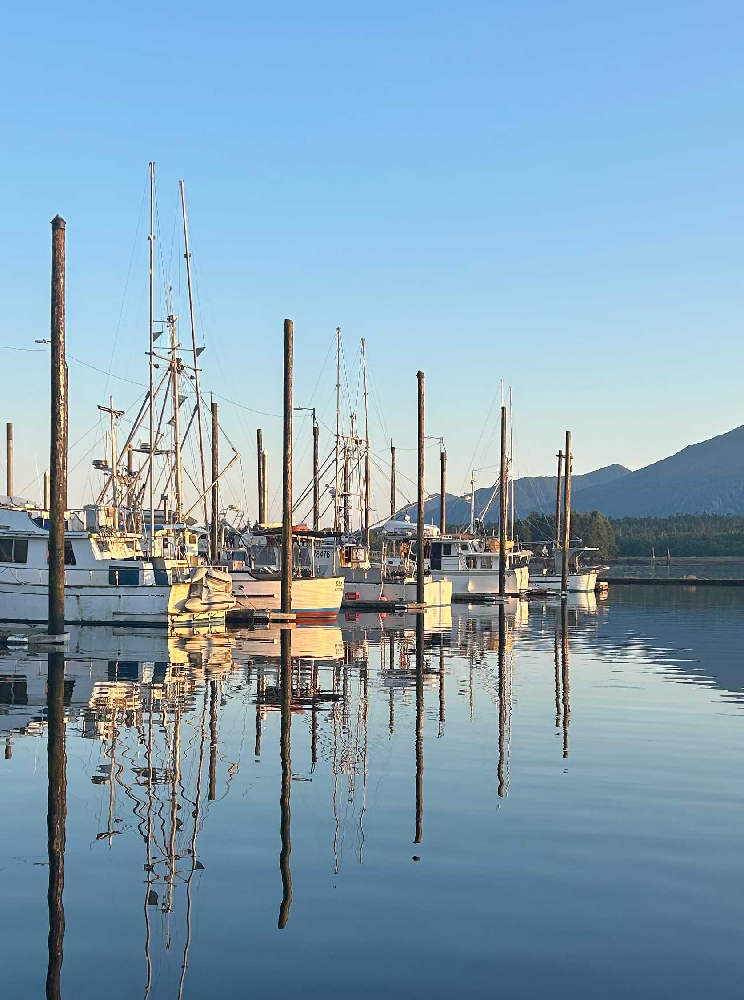

About Me
My name is Autumn Roundy and I am a coastal sport fishing captain. I grew up in New Mexico and have moved around quite a bit since I graduated high school. I recently got my captian's license after working in Alaska for two summers and now live in Fort Lauderdale, Florida where I live on a boat. I cannot wait to return to Alaska this upcoming summer to run salmon fishing charters through the Inside Passage. In my free time, I do professinal wildlife and portrait photography. I enjoy learning the ins and outs of Adobe software and designing graphics. I travel frequently for work and enjoy photographing and exploring the outdoors!
Ketchikan, Alaska, USA
Ketchikan, Alaska is considered Alaska's first city because it is the first city you reach while traveling North on the pacific ocean. It is considered Salmon Captial of the world, due to its popular travel destination for salmon fishing. It is home to all five species of Alaskan salmon, including; King, Coho, Sockeye, Pink, and Chum. The salmon run begins in late June and each species takes its turn swimming upstream to spawn until late September. Ketchikan also is a popular stop for cruise ships due to its rich culture, wide range of wildlife, beautiful scenery, and extremely biodiverse Tongass National Forest.
